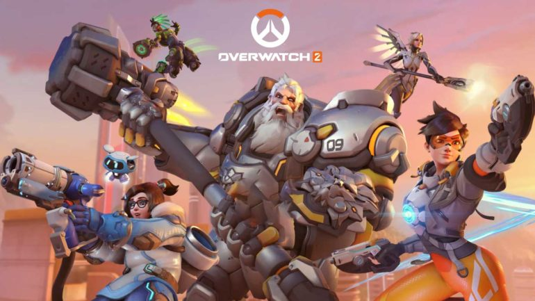

Top Popular Games
Overwatch has been an incredibly amiazing game since it's release on May 24, 2016. It quickly increased in popularity due to its competitive nature with new and interesting game mechanics. The game has become so popular that Blizzard, the company that made the game, has made a second game with new maps, new characters, and new mechanics.

One of the most recent games, Elden Ring, has grown in popularity at a record speed. Elden Ring is a type of game that many people call a souls game, meaning that the creaters of the game also made the dark souls games, another immensley popular game. Throughout Elden Ring, one must take on many different types of enemies, including, but no limited to, Giants, Dragons, Zombies, Wurms, Living pots, Snake men, and giant iron maidens. The goal is to race threw the world and defeat the bosses to become the next Elden Lord, and in doing so you unlock the new game plus mode where you start the game over with your same equipment with more difficult enemies and bosses that have more health and do more damage. It has fascinated many people ever since the day it came out an will likely see even more of an increase as the game's develepors keep adding to it.

Since the beginning of the game, Minecraft has always been one of the top played games in the world, and it still hasn't changed. Currently with over 10 million players this game has continued to hold the top spot for most players. It started out as a wonderful survival game where you are only limited by what you can imagine, with dozens of different blocks and over a hundred different items in the game, no two games could be the same. Recently there has been a large movement to special worlds where instead of survival you can log on with thousands of other players and meet with friends in worlds designed for even more fun.
